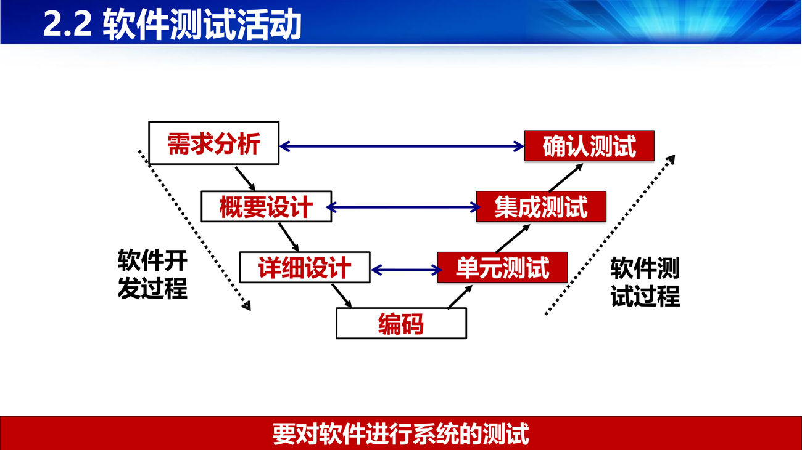
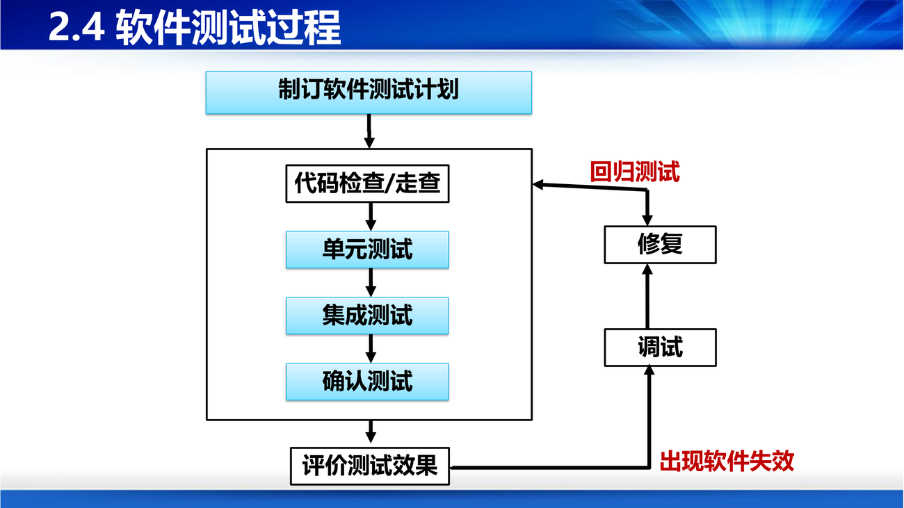
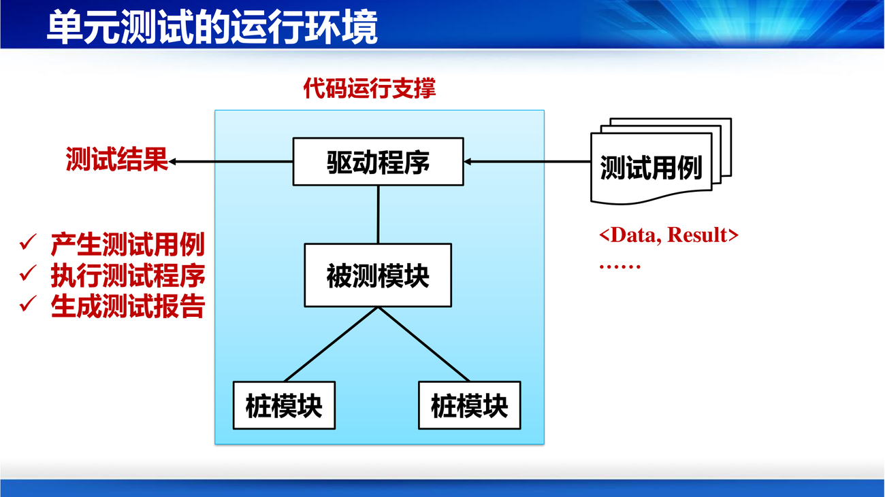

课件第 3 页列了软件缺陷的六种危害：无法满足要求、不能正常工作、引发安全事故、影响人员安全、产生经济损失……
然后又一次搬出了波音 737 MAX（PPT 第 3 页，第 2 讲也出现过）：原软件用于教练飞机，某参数屏显范围是 ±100，重用于新战斗机时，该参数屏显范围应该为 ±300！
补这个案例的可怕之处是"复用"：代码本身没有 bug，它只是被用到了超出其设计假设的场景。这和第 1 讲"软件不会磨损"形成对照——代码不会坏，但会过时。也解释了第 10 讲为什么"适应性维护"占比高达 21%。
课件第 4 页给了三条理由，值得当作"测试存在的公理"：
| 理由 | 内容 |
|---|---|
| 人总是会犯错误 | 软件工程师、用户都会 |
| 软件系统太复杂 | 复杂到无法穷尽所有情况 |
| 缺陷来自多个源头 | 需求、设计、编码活动；模型、文档、程序制品 |
结论："对于复杂软件系统而言缺陷不可避免，很难做到无缺陷的软件。"
课件还给了三张"缺陷藏在哪里"的示例图（PPT 第 5–7 页）：
result=0..3 分别表示"账号空串""密码空串""不合法""合法"，四条分支是否都覆盖？）补这三张图的递进关系是全讲的骨架：缺陷不是在编码阶段才出现的，它在需求阶段就产生了，然后一路传递并放大。这就是第 9 讲为什么强调"测试要贯穿全过程"（单元、集成、确认三层），而不是"最后测一遍"。缺陷发现得越晚，修复成本越高——这是软件工程里最硬的成本规律之一。
课件第 9 页的定义有两个关键限定，读的时候要圈出来：
软件测试是根据软件开发各阶段的规格说明和程序内部结构而精心设计的一批测试用例（即输入数据及预期的输出结果），并利用这些测试用例去运行程序，以发现程序错误的过程。
两个限定：
补第 2 条经常被误解为"测试人员甩锅"，其实它有严格的方法论含义：测试是"观察"，修复是"干预"。如果测试者同时负责修复，他就会不自觉地"按自己熟悉的路径去测"，从而漏掉真正的问题——这正是第 9 讲后面"测试原则"里"尽量避免开发人员测试自己的代码"的同一个道理。
课件第 10 页把测试抽象成一个极简模型：
设计测试数据 → 运行测试用例（程序处理数据）→ 判断运行结果（是否符合预期）
对应三个要素：
| 要素 | 含义 |
|---|---|
| 输入（测试数据） | 为软件测试而设计的数据，即测试用例（Test Case） |
| 被测程序 | 运行代码，产生实际结果 |
| 预期结果 | 事先确定"应该是多少"，与实际结果比对 |
一句话：测试 = 用设计好的输入跑程序，把实际输出和预期输出比对。
补这个模型有一个隐含前提：你必须先知道"正确答案是什么"。这正是测试最难的地方——如果需求没写清楚"3 秒内响应"，你就无法判断 4 秒算不算失败（第 4 讲"可验证"）。所以测试的质量上限，由需求的质量决定。
测试用例的十项内容（PPT 第 11 页），这是一份标准模板，写实验报告时可以直接照用：
| 项 | 内容 |
|---|---|
| 用例标识 | 唯一标识 |
| 用例开发者 / 开发日期 | 谁写的、什么时候写的 |
| 测试项 | 描述将被测试的具体特征、代码模块等对象 |
| 测试输入 | 为程序提供的输入数据 |
| 前提条件 | 执行测试时系统应处于的状态或要满足的条件 |
| 环境要求 | 软硬件环境、测试工具、人员 |
| 测试步骤 | (1)…；(2)…（如"点击文件菜单中的新建"） |
| 预期输出 | 希望程序运行得到的结果 |
| 用例间的依赖性 | 依赖或受影响的其它测试用例 |
补"前提条件"这一项最容易被学生漏写，也最致命。举例：测"用户登录成功后跳转首页"，前提条件必须写"该用户已注册且状态正常"。否则测试失败时你无法判断是"功能坏了"还是"这个账号本来就不该登录成功"。没有前提条件的测试用例，失败时无法定位。
一个最简例子（PPT 第 12 页）：加法功能 A = B + C；测试数据 1、2；预期结果 3。
任务（PPT 第 13–14 页）：输入是"待测试的程序代码 + 测试用例"，输出是"软件缺陷报告"（记录发现的缺陷）。
课件用一张"在一个系统里到处找缺陷"的图（标号 1–7）说明目标：尽可能多找出软件中缺陷。
两大挑战（PPT 第 15 页），这是全讲的"经济账"：
| 挑战 | 数据/原因 |
|---|---|
| 开销大 | 按 Boehm 统计，测试开销约占总成本的 30%–50% |
| 不能穷举 | 只有把所有可能情况都测到，才可能查出所有错误，但这不可能 |
结论：既然不能穷举，又要查出尽可能多的错误，就只能选择"高效的测试用例"——时间短、成本低、发现多。
补"不能穷举"有一个可以算的论证：一个函数接收两个 32 位整数，输入组合有 2⁶⁴ 种；假设每秒测一亿个用例，需要约 5800 年。所以测试的目标从来不是"证明没有缺陷"，而是"用有限代价把风险降到可接受"。 这句话是第 9 讲全部方法论的前提——等价类、边界值、覆盖标准，都是在"如何用更少的用例覆盖更多情况"这个约束下想出来的办法。
课件第 16 页区分了两类岗位，考试可能考"谁写测试工具"：
| 角色 | 职责 |
|---|---|
| 测试工具软件开发工程师（SDE/T） | 负责写测试工具代码，并利用工具对软件进行测试；或开发测试工具为测试工程师服务 |
| 软件测试工程师（STE） | 理解产品功能要求，对其进行测试，检查有没有 Bug，判断软件是否稳定，写出测试规范与测试案例 |
缺陷的潜在位置（PPT 第 18 页）：程序模块内部、程序模块接口、程序模块间的交互、整个软件系统。四个位置对应四种测试层级，这就是测试分层的由来。
测试与开发的对应关系（PPT 第 19 页）：
需求分析 → 概要设计 → 详细设计 → 编码
↓ ↓ ↓ ↓
确认测试 集成测试 单元测试 （编码）
测试活动的关系（PPT 第 20 页）：单元测试 → 集成测试 → 确认测试 → 其他测试（性能、安全、强度等），"循序渐进、逐层递进"。

测试过程（PPT 第 21 页）：
制订测试计划 → 代码检查/走查 → 单元测试 → 集成测试 → 确认测试
↑ ↓
└──── 调试 → 修复 → 回归测试 ←── 出现软件失效
→ 评价测试效果
补注意流程里有"代码检查/走查"，它在测试之前。这说明"测试 ≠ 质量保证的全部"：走查是不运行程序的人工检查，成本低、对"规范性问题"有效；测试是运行程序的动态检查，对"行为错误"有效。两者互补，不能互相替代。

测试对象（PPT 第 22 页）：对软件基本模块单元进行测试——过程、函数、方法、类。
测试方法：大多采用白盒测试技术。 测试内容（五项，这是重点）：
课件还标了一句："在详细设计阶段就可以设计单元测试用例及计划"（呼应第 3 讲瀑布模型每阶段产出测试计划）。
运行环境（PPT 第 23 页）：单元测试不能孤立运行，需要两样东西：
| 组件 | 作用 |
|---|---|
| 驱动程序（Driver） | 相当于"主程序"，调用被测模块、传入测试数据、接收结果 |
| 桩模块（Stub） | 模拟被测模块所调用的下层模块，返回预设值 |
流程是：驱动程序 → 被测模块（+ 桩模块替代其依赖）→ 测试结果。
补驱动和桩的方向千万别搞反：驱动在上面（调用者），桩在下面（被调用者）。记忆法："驱动开车来找你，桩是你在下面垫的假腿"。第 9 讲后面讲集成测试时，自顶向下集成需要桩（下层还没做，用假的顶上），自底向上集成需要驱动（上层还没做，写个假的来调用）——这个对应关系是最经典的考点。

单元测试的依据和对象（PPT 第 24–25 页）：依据是设计文档（程序流程），对象是模块代码，关注模块的功能、接口和流程。
勘误课件第 22 页列了五项测试内容（接口、局部数据结构、独立路径、错误处理、边界条件），第 24 页却只列了四项（执行路径、错误处理、模块接口、边界条件），漏了"局部数据结构"。以第 22 页的五项为准。